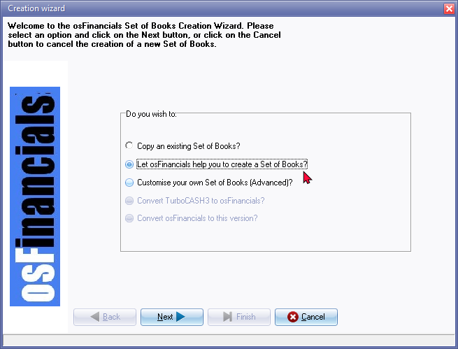

Create Set of Books
You may create exact copies from existing sets of books, templates on your system. The following options are available:
- Save as (Start ribbon).
- Create Set of Books (Copy an existing Set of Books? option on the "Creation wizard") (Start ribbon).
- Tools → Global processes → Copy from a Set of Books (Setup ribbon).
On the Start ribbon, you can select the Create Set of Books option or simply press the F10 key on your keyboard to use any of the following options on the "Creation wizard":

You may use the different options available when creating a new Set of Books in osFinancials:
- Copy an existing Set of Books? - This option allows you to create a new Set of Books by making an exact copy of an existing one, including all the data it contains. You can select the Set of Books you want to copy, and the system will create a new one in a directory of your choice.
- Let osFinancials help you to create a Set of Books? - This option lets you create a new Set of Books by selecting an existing Set of Books as a template. osFinancials will then guide you through the process of setting up your new Set of Books. You can also download pre-existing Sets of Books for your specific country or industry as templates to use as a starting point.
|
|
After downloading a Set of Books (template) using the "Let osFinancials help you to create a Set of Books?" option, the "Save as" screen will be launched, allowing you to save the template in a directory of your choosing. You can also view a list of available Sets of Books available for a download to use as templates for your new Set of Books. After downloading a Set of Books, the Set of Books (template) will automatically open in the language associated with the country and language of the Set of Books. |

- Create a Set of Books (Advanced)? - This option is intended for more advanced users who want to create a new Set of Books from scratch. You can select either the Firebird or MSSQL database type, providing more flexibility and control over the structure and content of your new Set of Books. You can also choose to set a maximum of 8-digit account codes, giving you more flexibility in creating a Set of Books that best suits your needs.
|
|
When creating, converting, or copying a Set of Books, the default number of characters for the account codes is determined by the selected Set of Books. Most Sets of Books currently use 3-digit account codes as their default setting. However, if you choose the "Create a Set of Books (Advanced)?" option , you can select a maximum of 8-digit account codes, providing more flexibility in creating a Set of Books that suits your needs. |